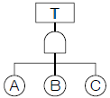
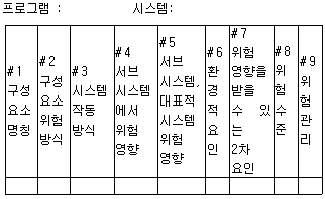
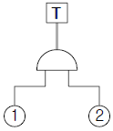

산업안전산업기사 (2015-03-08 기출문제)
1과목: 산업안전관리론
1. Alderfer의 ERG 이론 중 생존(Existence)욕구에 해당되는 Maslow의 욕구단계는?
- 자아실현의 욕구
- 존경의 욕구
- 사회적 욕구
- 생리적 욕구
(정답률: 86%)

2. 사업장의 안전준수 정도를 알아보기 위한 안전평가는 사전평가와 사후평가로 구분되어 지는데 다음 중 사전평가에 해당하는 것은?
- 재해율
- 안전샘플링
- 연천인율
- safe-T-score
(정답률: 68%)
3. O.J.T(On the job Training) 교육의 장점과 가장 거리가 먼 것은?
- 훈련에만 전념할 수 있다.
- 개개인의 업무능력에 적합한 자세한 교육이 가능하다.
- 직장의 실정에 맞게 실제적 훈련이 가능하다.
- 교육을 통해서 상사와 부하간의 의사소통과 신뢰감이 깊게 된다.
(정답률: 81%)
4. 질병에 의한 피로의 방지대책으로 가장 적합한 것은?
- 기계의 사용을 배제한다.
- 작업의 가치를 부여한다.
- 보건상 유해한 작업환경을 개선한다.
- 작업장에서의 부적절한 관계를 배제한다.
(정답률: 80%)
5. 산업안전보건법령상 의무안전인증 대상 보호구에 해당하지 않는 것은?
- 보호복
- 안전장갑
- 방독마스크
- 보안면
(정답률: 70%)
6. 안전관리의 4M 가운데 Media에 관한 내용으로 가장 올바른 것은?
- 인간과 기계를 연결하는 매개체
- 인간과 관리를 연결하는 매개체
- 기계와 관리를 연결하는 매개체
- 인간과 작업환경을 연결하는 매개체
(정답률: 76%)
7. 안전태도교육의 기본과정을 가장 올바르게 나열한 것은?
- 청취한다 → 이해하고 납득한다 → 시범을 보인다 → 평가한다
- 이해하고 납득한다 → 들어본다 → 시범을 보인다 → 평가한다
- 청취한다 → 시범을 보인다 → 이해하고 납득한다 → 평가한다
- 대량발언 → 이해하고 납득한다 → 들어본다 → 평가한다
(정답률: 81%)
8. 안전ㆍ보건교육 및 훈련은 인간행동 변화를 안전하게 유지하는 것이 목적이다. 이러한 행동변화의 전개과정 순서가 알맞은 것은?
- 자극 - 욕구 - 판단 - 행동
- 욕구 - 자극 - 판단 - 행동
- 판단 - 자극 - 욕구 - 행동
- 행동 - 욕구 - 자극 - 판단
(정답률: 75%)
9. 위험예지훈련 기초 4라운드(4R)에 내용으로 옳은 것은?
- 1R : 목표설정
- 2R : 현상파악
- 3R : 대책수립
- 4R : 본질추구
(정답률: 83%)
10. 다음 중 산업안전보건법상 사업 내 안전ㆍ보건교육의 교육과정에 해당하지 않는 것은?
- 특별안전ㆍ보건교육
- 근로자 정기안전ㆍ보건교육
- 관리감독자 정기안전ㆍ보건교육
- 안전관리자 신규 및 보수교육
(정답률: 78%)
11. 안전관리 조직 중 대규모 사업장에서 가장 이상적인 조직 형태는?
- 직계형 조직
- 직능전문화 조직
- 라인스태프(line-staff)형 조직
- 테스크포스(task-force)조직
(정답률: 87%)
12. 강의식 교육지도에서 가장 많은 시간이 할당되는 단계는?
- 도입
- 제시
- 적용
- 확인
(정답률: 67%)
13. 산업안전보건법령상 안전검사대상 유해ㆍ위험기계에 해당하지 않는 것은?
- 곤돌라
- 전기용접기
- 리프트
- 산업용원심기
(정답률: 58%)
14. 적성검사의 유형 중 체력검사에 포함되지 않는 것은?
- 감각기능검사
- 근력검사
- 신경기능검사
- 크루즈 지수(Kruse’s Index)
(정답률: 77%)
15. 기업조직의 원리 가운데 지시 일원화의 원리를 가장 잘 설명한 것은?
- 지시에 따라 최선을 다해서 주어진 임무나 기능을 수행하는 것
- 책임을 완수하는데 필요한 수단을 상사로부터 위임 받은 것
- 언제나 직속 상사에게서만 지시를 받고 특정 부하직원들에게만 지시하는 것
- 조직의 각 구성원이 가능한 한 가지 특수 직무만을 담당하도록 하는 것
(정답률: 80%)
16. 산업재해 발생의 직접원인에 해당하지 않는 것은?
- 안전수칙의 오해
- 물(物)자체의 결함
- 위험 장소의 접근
- 불안전한 속도 조작
(정답률: 60%)
17. 무재해운동의 기본이념 3가지에 해당하지 않는 것은?
- 무의 원칙
- 자주 활동의 원칙
- 참가의 원칙
- 선취 해결의 원칙
(정답률: 77%)
18. 과거에 경험하였던 것과 비슷한 상태에 부딪쳤을 때 떠 오르는 것을 무엇이라 하는가?
- 재생
- 기명
- 파지
- 재인
(정답률: 65%)
19. 산업안전보건법령상 안전ㆍ보건표지의 색채별 색도기준이 올바르게 연결된 것은? (단, 순서는 색상 명도/채도이며, 색도 기준은 KS에 따른 색의 3속성에 의한 표시방법에 따른다.)
- 빨간색 – 5R 4/13
- 노란색 – 2.5Y 8/12
- 파란색 – 7.5PB 2.5/7.5
- 녹색 – 2.5G 4/10
(정답률: 64%)
20. 1000명의 근로자가 주당 45시간씩 연간 50주를 근무하는 A기업에서 질병 및 기타 사유로 인하여 5%의 결근율을 나타내고 있다. 이 기업에서 연간 60건의 재해가 발생하였다면 이 기업의 도수율은 약 얼마인가?
- 25.12
- 26.67
- 28.07
- 51.64
(정답률: 47%)
2과목: 인간공학 및 시스템안전공학
21. 근골격계 질환을 예방하기 위한 관리적 대책으로 옳은 것은?
- 작업공간 배치
- 작업재료 변경
- 작업순환 배치
- 작업공구 설계
(정답률: 64%)
22. 청각신호의 위치를 식별할 때 사용하는 척도는?
- Al(Articulation Index)
- JND(Just Noticeable Difference)
- MAMA(Minimum Audible Movement Angle)
- PNC(Preferred Noise Criteria)
(정답률: 66%)
23. 인체측정치 응용원칙 중 가장 우선적으로 고려해야 하는 원칙은?
- 조절식 설계
- 최대치 설계
- 최소치 설계
- 평균치 설계
(정답률: 62%)
24. 일반적으로 연구조사에 사용되는 기준 중 기준척도의 신뢰성이 의미하는 것은?
- 보편성
- 적절성
- 반복성
- 객관성
(정답률: 56%)
25. 정보를 유리나 차양판에 중첩시켜 나타내는 표시장치는?
- CRT
- LCD
- HUD
- LED
(정답률: 80%)
26. 40세 이후 노화에 의한 인체의 시지각 능력 변화로 틀린 것은?
- 근시력 저하
- 휘광에 대한 민감도 저하
- 망막에 이르는 조명량 감소
- 수정체 변색
(정답률: 58%)
27. 조종장치를 3cm 움직였을 때 표시장치의 지침이 5cm 움직였다면 C/R비는?
- 0.25
- 0.6
- 1.5
- 1.7
(정답률: 80%)
28. 고열환경에서 심한 육체노동 후에 탈수와 체내 염분농도 부족으로 근육의 수축이 격렬하게 일어나는 장해는?
- 열경련(heat cramp)
- 열사병(heat stroke)
- 열쇠약(heat prostration)
- 열피로(heat exhaustion)
(정답률: 78%)
29. 인간-기계 시스템 평가에 사용되는 인간기준 척도 중에서 유형이 다른 것은?
- 심박수
- 안락감
- 산소소비량
- 뇌전위(EEG)
(정답률: 63%)
30. 인체의 피부와 허파로부터 하루에 600g의 수분이 증발될 때 열손실율은 약 얼마인가? (단, 37℃의 물 1g을 증발 시키는데 필요한 에너지는 2410J/g이다.)
- 약 15 Watt
- 약 17 Watt
- 약 19 Watt
- 약 21 Watt
(정답률: 53%)
31. 톱사상 T를 일으키는 컷셋에 해당하는 것은?

- {A}
- {A, B}
- {B, C}
- {A, B, C}
(정답률: 85%)
32. 시스템 수명주기에서 FMEA가 적용되는 단계는?
- 개발단계
- 구상단계
- 생산단계
- 운전단계
(정답률: 50%)
33. 시스템에 영향을 미치는 모든 요소의 고장을 형태별로 분석하여 그 영향을 검토하는 시스템안전 분석기법은?
- FMEA
- PHA
- HAZOP
- FTA
(정답률: 65%)
34. 표와 관련된 시스템위험분석 기법으로 가장 적합한 것은?

- 예비위험분석(PHA)
- 결함위험분석(FHA)
- 운용위험분석(OHA)
- 사상수분석(ETA)
(정답률: 50%)
35. 동작경제의 원칙에 해당하지 않는 것은?
- 가능하다면 낙하식 운반방법을 사용한다.
- 양손을 동시에 반대 방향으로 움직인다.
- 자연스러운 리듬이 생기지 않도록 동작을 배치한다.
- 양손으로 동시에 작업을 시작하고 동시에 끝낸다.
(정답률: 69%)
36. FT도에서 입력현상이 발생하여 어떤 일정 시간이 지속된 후 출력이 발생하는 것을 나타내는 게이트나 기호로 옳은 것은?
- 위험 지속 기호
- 조합 AND 게이트
- 시간 단축 기호
- 억제 게이트
(정답률: 62%)
37. FT도상에서 정상 사상 T의 발생 확률은? (단, 기본사 상 ①, ②의 발생 확률은 각각 1×10-2과 2×10-2이다.)

- 2×10-2
- 2×10-4
- 2.98×10-2
- 2.98×10-4
(정답률: 77%)
38. 사후보전에 필요한 수리시간의 평균치를 나타내는 것은?
- MTTF
- MTBF
- MDT
- MTTR
(정답률: 70%)
39. 안전 설계방법 중 페일세이프 설계(fail-safe design)에 한 설명으로 가장 적절한 것은?
- 오류가 전혀 발생하지 않도록 설계
- 오류가 발생하기 어렵게 설계
- 오류의 위험을 표시하는 설계
- 오류가 발생하였더라도 피해를 최소화 하는 설계
(정답률: 83%)
40. 다음 중 음성 인식에서 이해도가 가장 좋은 것은?
- 음소
- 음절
- 단어
- 문장
(정답률: 65%)
3과목: 기계위험방지기술
41. 프레스 양수조작식 안전거리(D) 계산식으로 적합한 것은? (단, TL는 누름버턴에서 손을 떼는 순간부터 급정지기구가 작동개시하기까지의 시간, TS는 급정지기구 작동을 개시 할 때부터 슬라이드가 정지할 때까지의 시간이다.)
- D = 1.6(TL - TS)
- D = 1.6(TL + TS)
- D = 1.6(TL ÷ TS)
- D = 1.6(TL × TS)
(정답률: 70%)
42. 기계설비의 안전조건 중 외관의 안전화에 해당하는 조치는?
- 고장발생을 최소화하기 위해 정기점검을 실시하였다.
- 전압강하, 정전시의 오동작을 방지하기 위하여 제어장치를 설치하였다.
- 기계의 예리한 돌출부 등에 안전 덮개를 설치하였다.
- 강도를 고려하여 안전율을 최대로 고려하여 설비를 설계하였다.
(정답률: 82%)
43. 프레스의 위험방지조치로써 안전블록을 사용하는 경우가 아닌 것은?
- 금형 부착 시
- 금형 파기 시
- 금형 해체 시
- 금형 조정 시
(정답률: 69%)
44. 2개의 회전체가 회전운동을 할 때에 물림점이 발생 될 수 있는 조건은?
- 두 개의 회전체 모두 시계방향으로 회전
- 두 개의 회전체 모두 시계 반대방향으로 회전
- 하나는 시계방향으로 회전하고 다른 하나는 시계 반대 방향으로 회전
- 하나는 시계방향으로 회전하고 다른 하나는 정지
(정답률: 82%)
45. 밀링 작업시 안전수칙 중 잘못된 것은?
- 작업시 보안경을 착용한다.
- 칩의 처리는 칩 브레이커로 한다.
- 가공물의 치수는 기계 정지 후 확인한다.
- 절삭속도는 재료에 따라 달리 적용한다.
(정답률: 81%)
46. 플레이너에 대한 설명으로 옳은 것은?
- 곡면을 절삭하는 기계이다.
- 가공재가 수평 왕복운동을 한다.
- 이송운동은 절삭운동의 2왕복에 대하여 1회의 단속 운동으로 이루어진다.
- 절삭운동 중 귀환행정은 저속으로 이루어져 “저속귀환 행정”이라 한다.
(정답률: 53%)
47. 밀링작업 시 절삭가공에 관한 설명으로 틀린 것은?
- 하향절삭은 커터의 절삭방향과 이송방향이 같으므로 백래시 제거장치가 없으면 곤란하다.
- 상향절삭은 밀링커터의 날이 가공재를 들어 올리는 방향으로 작용한다.
- 하향절삭은 칩이 가공한 면 위에 쌓이므로 시야가 좋지 않다.
- 상향절삭은 칩이 날을 방해하지 않고, 절삭열에 의한 치수정밀도의 변화가 적다.
(정답률: 60%)
48. 아세틸렌 용접 시 화재가 발생하였을 때 제일 먼저 해야 할 일은?
- 메인 밸브를 잠근다.
- 용기를 실외로 끌어낸다.
- 관리자에게 보고한다.
- 젖은 천으로 용기를 덮는다.
(정답률: 80%)
49. 가스 용접 작업을 위한 압력조정기 및 토치의 취급방법으로 틀린 것은?
- 압력조정기를 설치하기 전에 용기의 안전밸브를 가볍게 2~3회 개폐하여 내부 구멍의 먼지를 불어낸다.
- 압력조정기 체결 전에 조정 핸들을 풀고, 신속히 용기의 밸브를 연다.
- 우선 조정기의 밸브를 열고 토치의 콕 및 조정 밸브를 열어서 호스 및 토치 중의 공기를 제거한 후에 사용한다.
- 장시간 사용하지 않을 때는 용기 밸브를 잠그고 조정 핸들을 풀어둔다.
(정답률: 72%)
50. 연삭숫돌과 작업대, 교반기의 교반날개와 몸체 사이에서 형성되는 위험점은?
- 협착점(squeeze point)
- 끼임점(shear point)
- 절단점(cutting point)
- 물림점(nip point)
(정답률: 68%)
51. 기계설비의 수명곡선에서 고장의 유형에 관한 설명으로 틀린 것은?
- 초기 고장은 불량 제조나 생산과정에서 품질관리의 미비로부터 생기는 고장을 말한다.
- 우발고장은 사용 중 예측할 수 없을 때에 발생하는 고장을 말한다.
- 마모고장은 장치의 일부가 수명을 다해서 생기는 고장을 말한다.
- 반복고장은 반복 또는 주기적으로 생기는 고장을 말한다.
(정답률: 60%)
52. 안전계수 6인 로프의 파단하중이 1116kgf이라면, 이 로프는 몇 kgf 이하의 물건을 매달아야 하는가?
- 186
- 279
- 1116
- 6696
(정답률: 75%)
53. 보일러의 압력방출장치가 2개 이상 설치된 경우, 최고 사용압력 이하에서 1개가 작동되고, 남은 1개의 작동 압력은?
- 최고사용압력의 1.⑤배 이하
- 최고사용압력의 1.1배 이하
- 최고사용압력의 1.25배 이하
- 최고사용압력의 1.5배 이하
(정답률: 72%)
54. 선반의 크기를 표시하는 것으로 틀린 것은?
- 주축에 물릴 수 있는 공작물의 최대 지름
- 주축과 심압축의 센터 사이의 최대거리
- 왕복대 위의 스윙
- 베드 위의 스윙
(정답률: 59%)
55. 크레인의 작업시 그 작업에 종사하는 관계 근로자로 하여금 조치하여야 할 사항으로 적절하지 않은 것은?
- 고정된 물체를 직접 분리ㆍ제거하는 작업을 하지 아니 할 것
- 신호하는 사람이 없는 경우 인양할 하물(何物)이 보이지 아니하는 때에는 어떠한 동작도 하지 아니할 것
- 미리 근로자의 출입을 통제하여 인양 중인 하물이 작업자의 머리 위로 통과하지 않도록 할 것
- 인양할 하물은 바닥에 끌어당기거나 밀어내는 작업으로 유도할 것
(정답률: 82%)
56. 프레스의 본질적 안전화(no-hand in die 방식) 추진대책이 아닌 것은?
- 안전금형을 설치
- 전용프레스의 사용
- 방호울의 부착된 프레스 사용
- 감응식 방호장치 설치
(정답률: 65%)
57. 작업점에 대한 가드의 기본방향이 아닌 것은?
- 조작할 때 위험점에 접근하지 않도록 한다.
- 작업자가 위험구역에서 벗어나 움직이게 한다.
- 손을 작업점에 접근시킬 필요성을 배제한다.
- 방음, 방진 등을 목적으로 설치하지 않는다.
(정답률: 63%)
58. 반복하중을 받는 기계 구조물 설계 시 우선 고려해야 할 설계 인자는?
- 극한강도
- 크리프강도
- 피로한도
- 항복점
(정답률: 65%)
59. 가스용접작업 시 충전가스 용기 색깔 중에서 틀린 것은?
- 프로판가스 용기 : 회색
- 아르곤가스 용기 : 회색
- 산소가스 용기 : 녹색
- 아세틸렌가스 용기 : 백색
(정답률: 62%)
60. 목재가공용 기계의 방호장치가 아닌 것은?
- 덮개
- 반발예방장치
- 톱날접촉예방장치
- 과부하방지장치
(정답률: 68%)
4과목: 전기 및 화학설비위험방지기술
61. 전기화재에서 출화의 경과에 대한 화재예방대책에 해당하지 않는 것은?
- 단락 및 혼촉을 방지한다.
- 누전사고의 요인을 제거한다.
- 접촉불량방지와 안전점검을 철저히 한다.
- 단일 인입구에 여러 개의 전기코드를 연결한다.
(정답률: 83%)
62. 다음 중 고압활선작업에 필요한 보호구에 해당하지 않는 것은?
- 절연대
- 절연장갑
- 절연장화
- AE형 안전모
(정답률: 68%)
63. 감전사고의 사망경로에 해당되지 않는 것은?
- 전류가 뇌의 호흡중추부로 흘러 발생한 호흡기능 마비
- 전류가 흉부에 흘러 발생한 흉부근육수축으로 인한 질식
- 전류가 심장부로 흘러 심실세동에 의한 혈액순환기능 장애
- 전류가 인체에 흐를 때 인체의 저항으로 발생한 주울열에 의한 화상
(정답률: 74%)
64. 저압전선로 중 절연부분의 전선과 대지간 및 전선의 심선 상호간의 절연저항은 사용전압에 대한 누설전류가 최대 공급전류의 얼마를 넘지 않도록 규정하고 있는가?
- 1/1000
- 1/1500
- 1/2000
- 1/2500
(정답률: 67%)
65. 절연용 기구의 작업시작 전 점검사항으로 옳지 않은 것은?
- 고무소매의 육안점검
- 활선접근 경보기의 동작시험
- 고무장화에 대한 절연내력시험
- 고무장갑에 대한 공기점검 실시
(정답률: 54%)
66. 위험분위기가 존재하는 장소의 전기기기에 방폭 성능을 갖추기 위한 일반적 방법으로 적절하지 않은 것은?
- 점화원의 격리
- 전기기기의 안전도 증강
- 점화능력의 본질적 억제
- 점화원으로 되는 확률을 0으로 낮춤
(정답률: 61%)
67. 절연된 컨베이어 벨트 시스템에서 발생하는 정전기의 전압이 10kV이고, 이때 정전용량이 5pF일 때 이 시스템에서 1회의 정전기 방전으로 생성될 수 있는 에너지는 얼마인가?
- 0.2mJ
- 0.25mJ
- 0.5mJ
- 0.25J
(정답률: 56%)
68. 인체가 현저히 젖어있는 상태이거나 금속성의 전기ㆍ기계장치의 구조물에 인체의 일부가 상시 접촉되어 있는 상태에서의 허용접촉전압으로 옳은 것은?
- 2.5V 이하
- 25V 이하
- 50V 이하
- 75V 이하
(정답률: 74%)
69. 방폭전기기기를 선정할 경우 고려할 사항으로 가장 거리가 먼 것은?
- 접지공사의 종류
- 가스 등의 발화온도
- 설치될 지역의 방폭지역 등급
- 내압방폭구조의 경우 최대 안전틈새
(정답률: 48%)
70. 인화성액체에 의한 정전기 재해를 방지하기 위해서는 관내의 유속을 몇 m/s 이하로 유지하여야 하는가?
- 1
- 2
- 3
- 4
(정답률: 66%)
71. 다음 중 착화열에 대한 정의로 가장 적절한 것은?
- 연료가 착화해서 발생하는 전열량
- 연료 1kg이 착화해서 연소하여 나오는 총발열량
- 외부로부터 열을 받지 않아도 스스로 연소하여 발생하는 열량
- 연료를 최초의 온도로부터 착화온도까지 가열하는데 드는 열량
(정답률: 57%)
72. 다음 중 산업안전보건법에 따른 관리대상 유해물질의 운반 및 저장 방법으로 적절하지 않은 것은?
- 저장장소에는 관계 근로자가 아닌 사람의 출입을 금지하는 표시를 한다.
- 관리대상 유해물질의 증기는 실외로 배출되지 않도록 적절한 조치를 한다.
- 관리대상 유해물질을 저장할 때 일정한 장소를 지정하여 저장하여야 한다.
- 물질이 새거나 발산될 우려가 없는 뚜껑 또는 마개가 있는 튼튼한 용기를 사용한다.
(정답률: 72%)
73. 소화기의 몸통에 “A급 화재 10단위”라고 기재되어 있는 소화기에 관한 설명으로 적절한 것은?
- 이 소화기의 소화능력시험시 소화기 조작자는 반드시 방화복을 착용하고 실시하여야 한다.
- 이 소화기의 A급 화재 소화능력 단위가 10단위이면, B급 화재에 대해서도 같은 10단위가 적용된다.
- 어떤 A급 화재 소방대상물의 능력단위가 21일 경우이 소방대상물에 위의 소화기를 비치할 경우 2대면 충분하다.
- 이 소화기의 소화능력 단위는 소화능력시험에 배치되어 완전소화한 모형의 수에 해당하는 능력단위의 합계가 10단위라는 뜻이다.
(정답률: 65%)
74. 건조설비구조에 관한 설명으로 옳지 않은 것은?
- 건조설비의 외면은 불연성 재료로 한다.
- 위험물 건조설비의 측벽이나 바닥은 견고한 구조로 한다.
- 건조설비의 내부는 청소할 수 있는 구조로 되어서는 안 된다.
- 건조설비의 내부 온도는 국부적으로 상승되는 구조로 되어서는 안 된다.
(정답률: 78%)
75. 최소착화에너지가 0.25mJ, 극간 정전용량이 10pF인 부탄가스 버너를 점화시키기 위해서 최소 얼마 이상의 전압을 인가하여야 하는가?
- 0.52×102V
- 0.74×103V
- 7.07×103V
- 5.03×105V
(정답률: 55%)
76. 산업안전보건법령에 따라 사업주는 공정안전보고서의 심사결과를 송부 받는 경우 몇 년간 보존하여야 하는가?
- 2년
- 3년
- 5년
- 10년
(정답률: 62%)
77. 다음 중 가연성 가스로만 구성된 것은?
- 메탄, 에틸렌
- 헬륨, 염소
- 오존, 암모니아
- 산소, 아황산가스
(정답률: 71%)
78. 방폭용 공구류의 제작에 많이 쓰이는 재료는?
- 철제
- 강철합금제
- 카본제
- 베릴륨 동합금제
(정답률: 57%)
79. 유해ㆍ위험설비의 설치ㆍ이전시 공정안전보고서의 제출 시기로 옳은 것은?
- 공사완료 전까지
- 공사 후 시운전 익일까지
- 설비 가동 후 30일 이내에
- 공사의 착공일 30일 전까지
(정답률: 66%)
80. 다음 중 산업안전보건기준에 관한 규칙에서 규정하는 급성 독성 물질에 해당되지 않는 것은?
- 쥐에 대한 경구투입실험에 의하여 실험동물의 50%를 사망 시킬 수 있는 물질의 양이 kg당 300mg-(체중) 이하인 화학물질
- 쥐에 대한 경피흡수실험에 의하여 실험동물의 50%를 사망 시킬 수 있는 물질의 양이 kg당 1000mg-(체중) 이하인 화학물질
- 토끼에 대한 경피흡수실험에 의하여 실험동물의 50%를 사망 시킬 수 있는 물질의 양이 kg당 1000mg-(체중) 이하인 화학물질
- 쥐에 대한 4시간 동안의 흡입실험에 의하여 실험동물의 50%를 사망시킬 수 있는 가스의 농도가 3000ppm 이상인 화학물질
(정답률: 74%)
5과목: 건설안전기술
81. 낙하ㆍ비래 재해 방지설비에 대한 설명으로 틀린 것은?
- 투하설비는 높이 10m 이상 되는 장소에서만 사용한다.
- 투하설비의 이음부는 충분히 겹쳐 설치한다.
- 투하입구 부근에는 적정한 낙하방지설비를 설치한다.
- 물체를 투하시에는 감시인을 배치한다.
(정답률: 64%)
82. 안전난간 설치시 발끝막이판은 바닥면으로부터 최소 얼마 이상의 높이를 유지해야 하는가?
- 5cm 이상
- 10cm 이상
- 15cm 이상
- 20cm 이상
(정답률: 64%)
83. PC(Precast Concrete)조립 시 안전대책으로 틀린 것은?
- 신호수를 지정한다.
- 인양 PC부재 아래에 근로자 출입을 금지한다.
- 크레인에 PC부재를 달아 올린 채 주행한다.
- 운전자는 PC부재를 달아 올린 채 운전대에서 이탈을 금지한다.
(정답률: 79%)
84. 시스템 비계를 사용하여 비계를 구성하는 경우에 준수 하여야 할 기준으로 틀린 것은?
- 수직재ㆍ수평재ㆍ가새재를 견고하게 연결하는 구조가 되도록 할 것
- 비계 말단의 수직재와 받침철물은 밀착되도록 설치하고, 수직재와 받침철물의 연결부의 겹침길이는 받침 철물 전체길의 4분의 1 이상이 되도록 할 것
- 수평재는 수직재와 직각으로 설치하여야 하며, 체결 후 흔들림이 없도록 견고하게 설치할 것
- 수직재와 수직재의 연결철물은 이탈되지 않도록 견고한 구조로 할 것
(정답률: 75%)
85. 굴착작업에 있어서 지반의 붕괴 또는 토석의 낙하에 의하여 근로자에게 위험을 미칠 우려가 있는 경우에 사전에 필요한 조치로 거리가 먼 것은?
- 인화성 가스의 농도 측정
- 방호망의 설치
- 흙막이 지보공의 설치
- 근로자의 출입금지 조치
(정답률: 75%)
86. 콘크리트 타설작업을 하는 경우의 준수사항으로 틀린 것은?
- 콘크리트 타설작업 중 이상이 있으면 작업을 중지하고 근로자를 대피시킬 것
- 콘크리트를 타설하는 경우에는 편심을 유발하여 콘크리트를 거푸집 내에 밀실하게 채울 것
- 설계도서상의 콘크리트 양생기간을 준수하여 거푸집 동바리 등을 해체할 것
- 콘크리트 타설작업 시 거푸집 붕괴의 위험이 발생할 우려가 있으면 충분히 보강조치를 할 것
(정답률: 76%)
87. 재해발생과 관련된 건설공사의 주요 특징으로 틀린 것은?
- 재해 강도가 높다.
- 추락재해의 비중이 높다.
- 근로자의 직종이 매우 단순하다.
- 작업 환경이 다양하다.
(정답률: 76%)
88. 암반사면의 파괴 형태가 아닌 것은?
- 평면파괴
- 압축파괴
- 쐐기파괴
- 전도파괴
(정답률: 47%)
89. 철근 콘크리트 공사에서 슬래브에 대하여 거푸집동바리를 설치할 때 고려해야 할 사항으로 가장 거리가 먼 것은?
- 철근콘크리트의 고정하중
- 타설시의 충격하중
- 콘크리트의 측압에 의한 하중
- 작업인원과 장비에 의한 하중
(정답률: 55%)
90. 강관비계를 설치하는 경우 첫 번째 띠장의 설치 기준은?
- 지상으로부터 1m 이하
- 지상으로부터 2m 이하
- 지상으로부터 3m 이하
- 지상으로부터 4m 이하
(정답률: 66%)
91. 비계의 높이가 2m 이상인 작업장소에 설치하는 작업발판의 최소폭 기준은? (단, 달비계, 달대비계 및 말비계는 제외)
- 30cm 이상
- 40cm 이상
- 50cm 이상
- 60cm 이상
(정답률: 68%)
92. 철골구조물의 건립 순서를 계획할 때 일반적인 주의사 항으로 틀린 것은?
- 현장건립 순서와 공장제작 순서를 일치시킨다.
- 건립기계의 작업반경과 진행방향을 고려하여 조립 순서를 결정한다.
- 건립 중 가볼트 체결기간을 가급적 길게 하여 안정을 기한다.
- 연속기둥 설치시 기둥을 2개 세우면 기둥 사이의 보도 동시에 설치하도록 한다.
(정답률: 68%)
93. 흙의 동상방지 대책으로 틀린 것은?
- 동결되지 않는 흙으로 치환하는 방법
- 흙속의 단열재료를 매입하는 방법
- 지표의 흙을 화학약품으로 처리하는 방법
- 세립토층을 설치하여 모관수의 상승을 촉진시키는 방법
(정답률: 63%)
94. 강관비계의 구조에서 비계기둥 간의 적재하중 기준으로 옳은 것은?
- 200kg 이하
- 300kg 이하
- 400kg 이하
- 500kg 이하
(정답률: 60%)
95. 철골공사 작업 중 작업을 중지해야 하는 기후조건의 기준으로 옳은 것은?
- 풍속:10m/sec 이상, 강우량:1mm/h 이상
- 풍속:5m/sec 이상, 강우량:1mm/h 이상
- 풍속:10m/sec 이상, 강우량:2mm/h 이상
- 풍속:5m/sec 이상, 강우량:2mm/h 이상
(정답률: 78%)
96. 개착식 굴착공사(Open cut)에서 설치하는 계측기기와 거리가 먼 것은?
- 수위계
- 경사계
- 응력계
- 내공변위계
(정답률: 58%)
97. 달비계 또는 높이 5m 이상의 비계를 조립ㆍ해체하거나 변경하는 작업 시 준수사항으로 틀린 것은?
- 근로자가 관리감독자의 지휘에 따라 작업하도록 할 것
- 비, 눈, 그 밖의 기상상태의 불안정으로 날씨가 몹시 나쁜 경우에는 그 작업을 중지시킬 것
- 비계재료의 연결ㆍ해체작업을 하는 경우에는 폭 20cm 이상의 발판을 설치할 것
- 강관비계 또는 통나무비계를 조립하는 경우 외줄로 구성하는 것을 원칙으로 할 것
(정답률: 60%)
98. 양중기의 와이어로프 등 달기구의 안전계수 기준으로 옳은 것은? (단, 화물의 하중을 직접 지지하는 달기와이어 로프 또는 달기체인의 경우)
- 3 이상
- 4 이상
- 5 이상
- 6 이상
(정답률: 73%)
99. 토사붕괴의 내적 원인에 해당하는 것은?
- 토석의 강도 저하
- 절토 및 성토 높이의 증가
- 사면법면의 경사 및 기울기 증가
- 지표수 및 지하수의 침투에 의한 토사 중량 증가
(정답률: 62%)
100. 다음 건설기계의 명칭과 각 용도가 옳게 연결된 것은?
- 드래그라인 - 암반굴착
- 드래그쇼벨 - 흙 운반작업
- 크램쉘 - 정지작업
- 파워쇼벨 - 지반면보다 높은 곳의 흙파기
(정답률: 68%)